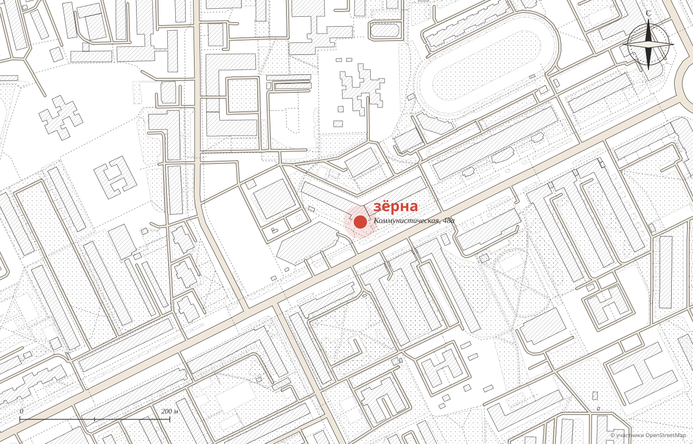

01
Рисунок на кофеЗайчик, корги или розетта: бариста рисуют на капучино, и двух одинаковых не бывает.
Демо-макет студии MERIDIAN · не является официальным сайтом заведения
Спешелти-кофейня · Сыктывкар · Коммунистическая, 48а
Заходите за минутками отдыха: спешелти от Mikale, Юнат Кофе и Makbush,
фреска во всю стену и бариста, которые помнят ваше имя.
будни с 8:00, выходные с 10:00
Лучшая кофейня 2026 · Премия 2ГИС · 5.0, 356 оценок

Минутки отдыха
Мы развиваем культуру кофе в Сыктывкаре вместе с вами. Гости пишут, что выбор спешелти здесь самый широкий в городе.
Зерно от обжарщиков Mikale, Юнат Кофе и Makbush, у каждого сорта свой букет. Воронка, аэропресс и батч-брю, авторские рафы и чай в чайниках. А для дома и дороги дрип-пакеты.


Что в чашке
Поэтому его здесь нет. Новые лоты, десерты и выпечка приходят быстрее, чем обновится любая страница.
Свежее меню в ваших постах ВКонтакте, а в зале спросите бариста, что сегодня в воронке.
Что сейчас любят гости
Из отзывов гостей в 2ГИС. Наведите на слово или нажмите на него: покажем снимок из вашей галереи.
Минутки счастья
01
Рисунок на кофеЗайчик, корги или розетта: бариста рисуют на капучино, и двух одинаковых не бывает.

02
Вас помнятИмя, любимый раф и с каким десертом вы его берёте. Ждут не очередного гостя, а именно вас.

03
ЛетникЛетом деревянные столы на улице, а из окна круглый год вид на город.

04
Мандарины на Новый годРозыгрыши кофе, мандарины в декабре, брелоки на День святого Валентина. И бонусная программа каждый день.

Фреска во всю стену, серые диваны и яркие подушки.Восемнадцать мест, а летом веранда.

Адрес и часы
Центр Сыктывкара, здание «Аврора», первый этаж.